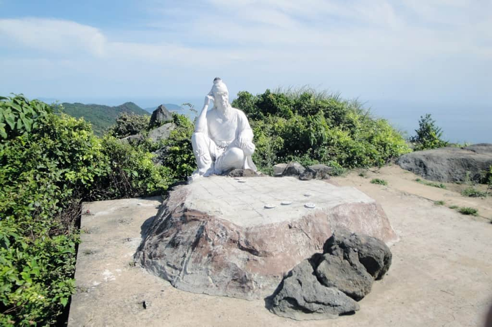
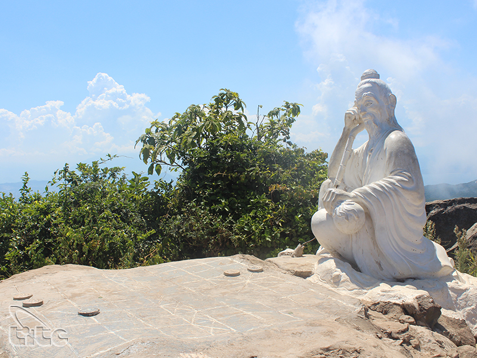
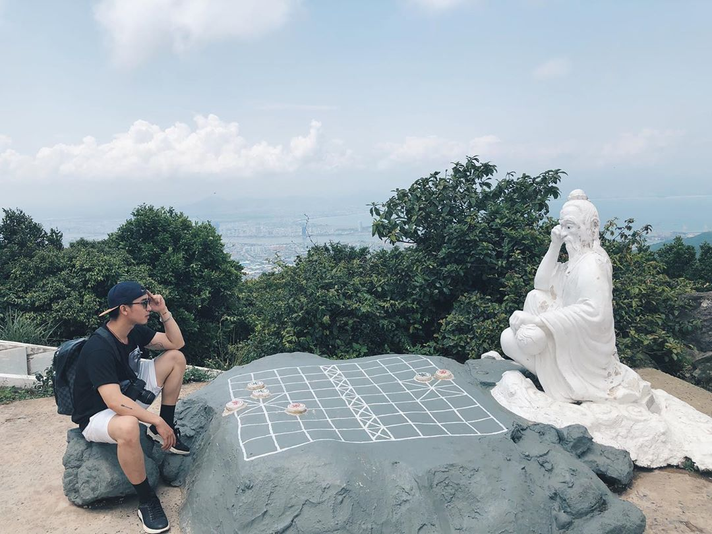

Đỉnh Bàn Cờ
Địa Điểm Trải Nghiệm Phiêu Lưu
Đình bàn cờ là địa điểm du lịch nổi tiếng của Đà Nẵng. Du khách muôn phương khi đến với Đà Nẵng thú thật không ai không nhắc đến Đỉnh bàn cờ. Họ đều rất ấn tượng với địa điểm này. Sự đơn sơ, giản dị và mộc mạc trong văn hóa địa khu và đặc điểm lịch sử ấn tượng này khiến rất nhiều người say đắm. Thật đáng tiếc nếu bạn là một "phượt thủ" chính hiệu mà không tự cho bản thân cơ hội trải nghiệm tuyệt vời tại đây. Lí do cho sự nổi tiếng của địa điểm thiên nhiên đặc trưng này là những câu chuyện cổ xưa. Gắn liền với những câu chuyện xưa, khu du lịch Sơn Trà ẩn chứa rất nhiều câu chuyện huyền thoại. Từ những câu chuyện về các vị tiên đã lựa chọn cảnh đẹp nơi Sơn Trà để dạo chơi. Cho đến các nàng tiên nữ đẹp hiền diệu đã đi qua và để lại những câu chuyện cho đời sau kể lại.
Theo như truyền thuyết kể rằng: Có hai vị tiên ông ngồi đánh cờ trên đỉnh núi Sơn Trà nhưng trong nhiều ngày vẫn bất phân thắng bại. Rồi một hôm,những tiên nữ bay xuống bãi biển để tắm, trong lúc lơ là nhìn tiên nữ vui đùa, một tiên ông đã bị đối thủ đánh bại. Bực mình vì thua ván cờ, tiên ôn đá văng bàn cờ xuống biển, rồi bay về trời. Bãi biển mà tiên nữ tắm ấy bây giờ trở thành bãi biển đẹp nhất Việt Nam với cái tên Tiên Sa, còn bàn cờ tiên bây giờ vẫn còn nằm dưới biển để minh chứng một truyền thuyết thực ảo về bán đảo Sơn Trà. Và theo truyền thuyết này, người dân đã đặt một bức tượng Đế Thích ngồi một mình bên tảng đá có hình bàn cờ và đó chính là lý do ra đời cái tên Đỉnh Bàn Cờ .
Tọa lạc trên một đỉnh núi, Đỉnh Bàn Cờ nằm ở độ cao 700m so với mực nước biển, thuộc bán đảo Sơn Trà Đà Nẵng, cách trung tâm thành phố về phía Tây khoảng 15km. Nơi đây không gian dường như đứng lại, trôi êm đèm, chảy chầm chậm. Không ồn ào như nội thành tấp nập. Đỉnh Bàn Cờ làm người ta liên tưởng đến những bậc quân tử ngày xưa. Về văn hóa truyền thống xưa kia, những nam nhi thường lấy việc đánh cờ làm thú vui trí tuệ. Cách đánh cờ thể hiện tính cách con người. Cầm kì thi họa là văn hóa mà nữ nhi được học tập và tu dưỡng bản thân trong chính những loại hình này. Chúng ta thấy được một vẻ đẹp có nội hàm sâu sắc trong cảnh tỉnh nơi đây. Có những lúc trong sự sô bồ của cuộc sống hiện đại. Ta luôn cần tìm lại trong mình những văn hóa truyền thông xưa cũ. Để đạo đức và tinh thần ngày càng nâng cao.
Du khách gần xa bây giờ cũng bị cuốn hút bởi bối cảnh “tiên sa” của chốn trần gian ấy. Bạn sẽ hết sức thích thú khi lượn xe trên đường núi lắm quanh co, trắc trở, kích thích óc phiêu lưu. Bạn sẽ có cảm giác đê mê trong làn sương dày đặc phả vào người khi xe leo lên đỉnh. Những con đường bê tông nhỏ uốn lượn quanh co dưới tán cây rừng, lúc lại leo cheo bên men theo bờ biển, có khi lại như nằm trên những tầng mây khi sương kéo về mờ ảo. Bạn hãy thử phóng tầm mắt về phía thành phố đã thu nhỏ từ đỉnh. Hình ảnh những tòa nhà cao chọc trời, những con thuyền lênh đênh trên biển, những cây cầu với kiến trúc độc đáo. Đặc biệt bạn cũng có thể kết hợp du lịch và tham quan vì đường đi lên Đỉnh Bàn Cờ còn có rất nhiều địa điểm tham quan nổi tiếng khác như Chùa Linh Ứng, Bãi Bụt, Bãi đá Obama, Bãi Rạng,....
Nhiều người còn không ngần ngại khắc tên mình trên vách núi mong lưu danh thiên cổ cùng danh thắng. Lên đỉnh Bàn Cờ từ lúc thành phố còn ngái ngủ, bạn sẽ có thể thấy được cảnh mặt trời mọc đẹp đến nhường nào. Đường sá cũng không thách thức bằng cái ánh đỏ rực ở góc núi phía đông báo hiệu sự bắt đầu của một ngày hè oi ả.
Nhiều du khách cả trong nước, ngoài nước mong lưu niệm phút trầm tư giữa tiên cảnh mà không ngần ngại ngồi đối diện chống cằm, đặt tay lên quân cờ, đứng cạnh tiên ông. Khi bạn ngồi đối diện tiên ông, bạn sẽ thấy rõ được ngón tay phải của tiên ông trỏ lên đầu, tay trái cầm bầu rượu, bàn cờ không còn nhiều quân cờ như trước (mỗi bên còn 3 quân: bên xanh còn tướng với cặp pháo; bên đen còn tướng với cặp chốt), tất cả quân cờ đều được làm bằng xi-măng và đã được đính cứng vào bàn xi-măng. Các phượt thủ có thể sử dụng mô tô, xe máy để leo lên đến đỉnh. Ngoài ra các gia đình đi dã ngoại cùng nhau có thể đi bằng ô tô 4 chỗ hoặc 7 chỗ. Đối với các đoàn du lịch đông người thì đi xe khách vẫn lọt được trên đường chính đến đỉnh bàn cờ.
Thực vật nơi đây vẫn còn hoang sơ, cây cối phủ um tùm, càng lên cao thì sương càng dày và lạnh nên muốn đánh được một ván cờ với tiên ông cũng không hề đơn giản. Nhưng chính những khó khăn đó lại chính là những điều mà bất cứ ai đến Sơn Trà mong muốn, vì những cảm giác đó là những trải nghiệm nơi đây vô cùng thu vị và đáng nhớ mà khó nơi nào có được.
Tuy nhiên, truyền thuyết về Đỉnh Bàn Cờ và những lời văn chau chuốt không phải lúc nào cũng thuyết phục, nhưng hy vọng khung cảnh tuyệt vời sẽ mãi còn trong kí ức của những ai đã từng ghé thăm, của những ai đã từng được hét lên thật to trên đỉnh Sơn Trà. Chúc bạn có những trải nghiệm phiêu lưu thú vị tại nơi đây.